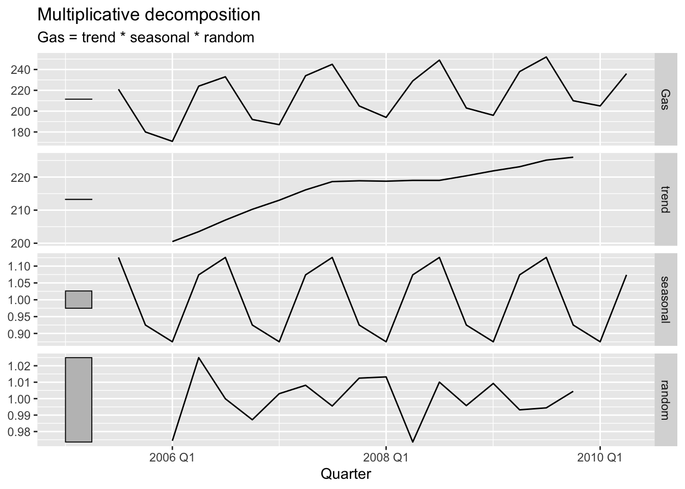
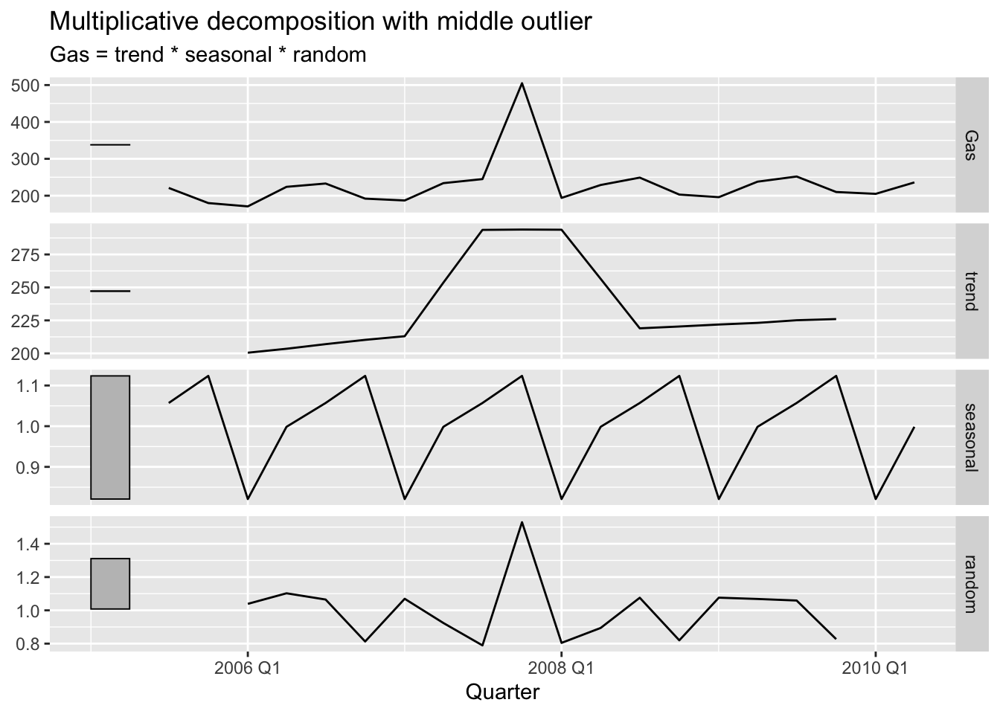
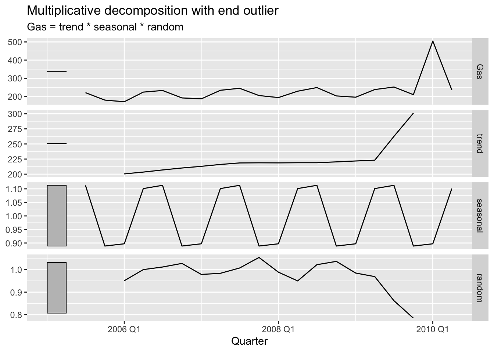
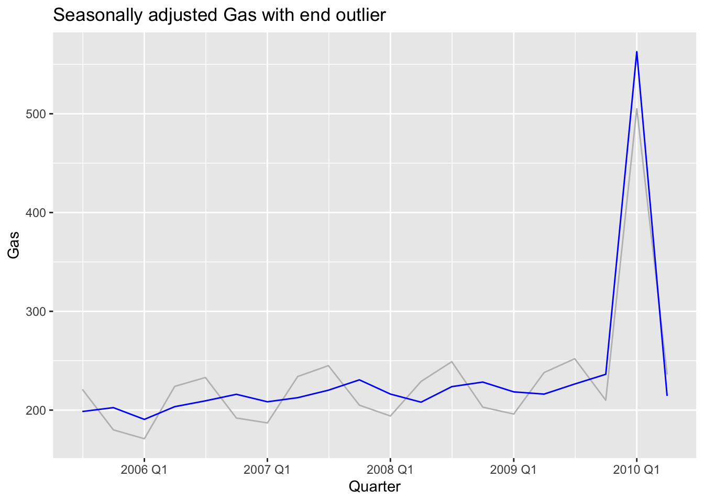
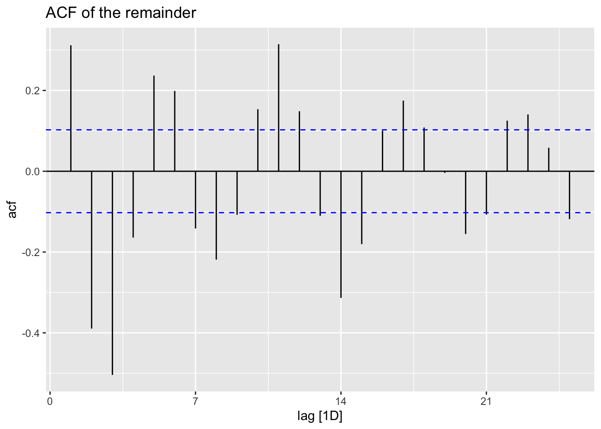

Warning: Removed 8 rows containing missing values or values outside the scale range
(`geom_line()`).

Now to see when the outlier is in the middle
gas_middle_outlier <- gasgas_middle_outlier$Gas[10] <- gas_middle_outlier$Gas[10] +300gas_middle_decomp <- gas_middle_outlier |>model(dcmp =classical_decomposition(Gas, type ="multiplicative")) |>components() |>mutate(detrended = Gas / trend,season_adjust_manual = Gas / seasonal )
gas_middle_decomp |>autoplot() +labs(title ="Multiplicative decomposition with middle outlier")
Warning: Removed 8 rows containing missing values or values outside the scale range
(`geom_line()`).

So here I interpret this so trend is the biggest factor, and because we put the outlier the seasonality effect became less signifacnt according to the graph (the grey rectnagle got bigger compared to before).
Also interestingly the model correctly identifies that randomness has more of a role, which is basically the expected result.
With the middle outlier, the trend moves because the centered moving average can use observations on both sides of the outlier. Since the trend changes, the detrended series also changes because it is calculated as Gas / trend. The seasonal component also changes because it is estimated from the detrended values, so the outlier contaminates the trend, detrended, and seasonal components instead of appearing only in the random component.
When the outlier is near the end:
gas_end_outlier <- gasgas_end_outlier$Gas[19] <- gas_end_outlier$Gas[19] +300gas_end_decomp <- gas_end_outlier |>model(dcmp =classical_decomposition(Gas, type ="multiplicative")) |>components() |>mutate(detrended = Gas / trend,season_adjust_manual = Gas / seasonal )
gas_end_decomp |>autoplot() +labs(title ="Multiplicative decomposition with end outlier")
Warning: Removed 8 rows containing missing values or values outside the scale range
(`geom_line()`).

I feel like here the model is not able to tell that well that it was mre likely becasue if randomness effect the change happened at the end. Sesasonality is still reduced effect.
gas_end_decomp |>ggplot(aes(x = Quarter)) +geom_line(aes(y = Gas), colour ="grey") +geom_line(aes(y = season_adjust_manual), colour ="blue") +labs(title ="Seasonally adjusted Gas with end outlier")

Before moving the outlier near the end, I expected it to affect the decomposition less broadly than the middle outlier, because the centered moving average cannot be computed at the edges of the series.
So after researching more I found that the end outlier still changes the decomposition, and visually it can look like the final movement is partly absorbed into the trend. However, because a centered moving average cannot be computed all the way to the end, the outlier affects fewer trend estimates than a middle outlier, so its effect is less spread through the trend, detrended, and seasonal components.
Exercise 2
labour_tsibble <-as_tsibble(labour)labour_tsibble |>autoplot(value) +labs(title ="Australian civilian labour force")
I tried trend(window = 21) first, but the trend was too smooth and the crisis still appeared too strongly in the remainder. I tried trend(window = 13), which allowed the trend to bend more around 1991-1992 and moved more of the crisis out of the remainder. I tried trend(window = 9), which captured the crisis even more strongly, but it may be too flexible because the trend starts following short-term movements. I also tried season(window = 5), but it made the seasonal component change more quickly than I would trust, so I prefer keeping season(window = 11).
OVERALL,the setting I thought was the best is trend(window = 13) and season(window = 11) because it captures more of the 1991-1992 crisis in the trend without making the decomposition too flexible.
Exercise 3
vic_elec_d <- vic_elec |>index_by(Date) |>summarise(avg_demand =mean(Demand)) |>filter(year(Date) ==2012)vic_elec_d |>autoplot(avg_demand) +labs(title ="Daily average electricity demand in Victoria, 2012")
vic_decomp |>ACF(remainder) |>autoplot() +labs(title ="ACF of the remainder")

This decomposition is not fully successful because the grey scale bars show that the remainder is still large compared with the components, and the ACF plot shows clear autocorrelation left in the remainder. This means the remainder is not white noise, so the decomposition has not captured all the structure in the daily electricity demand series.